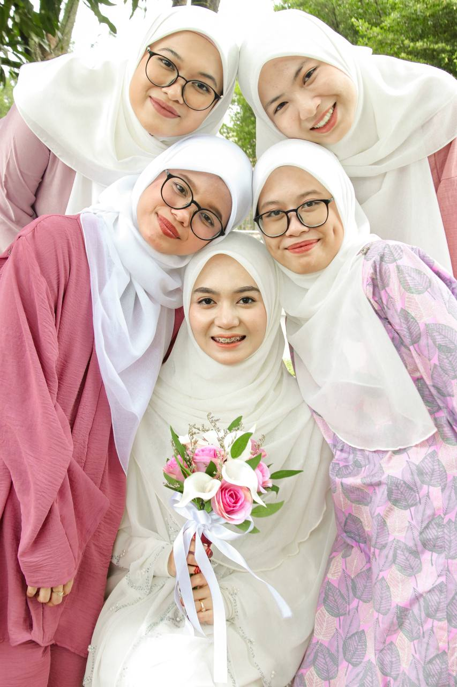
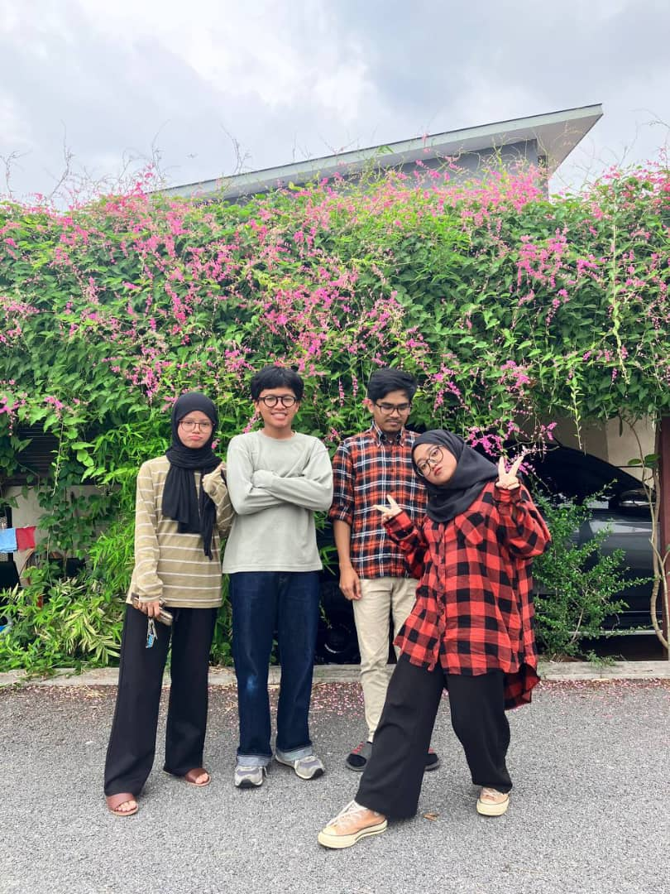
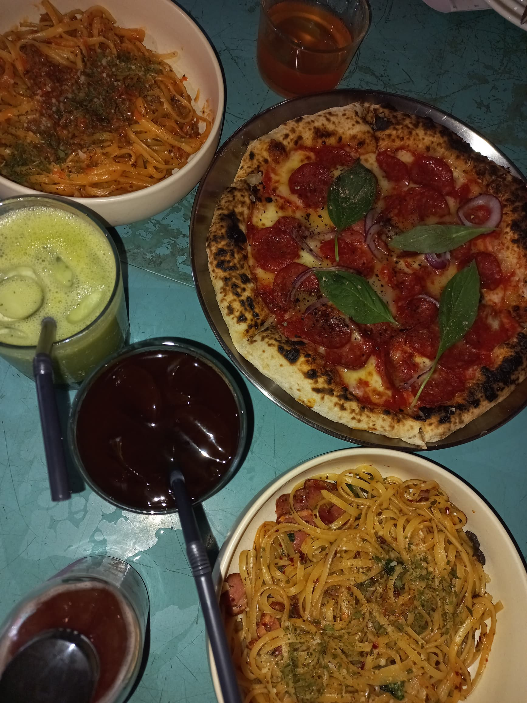
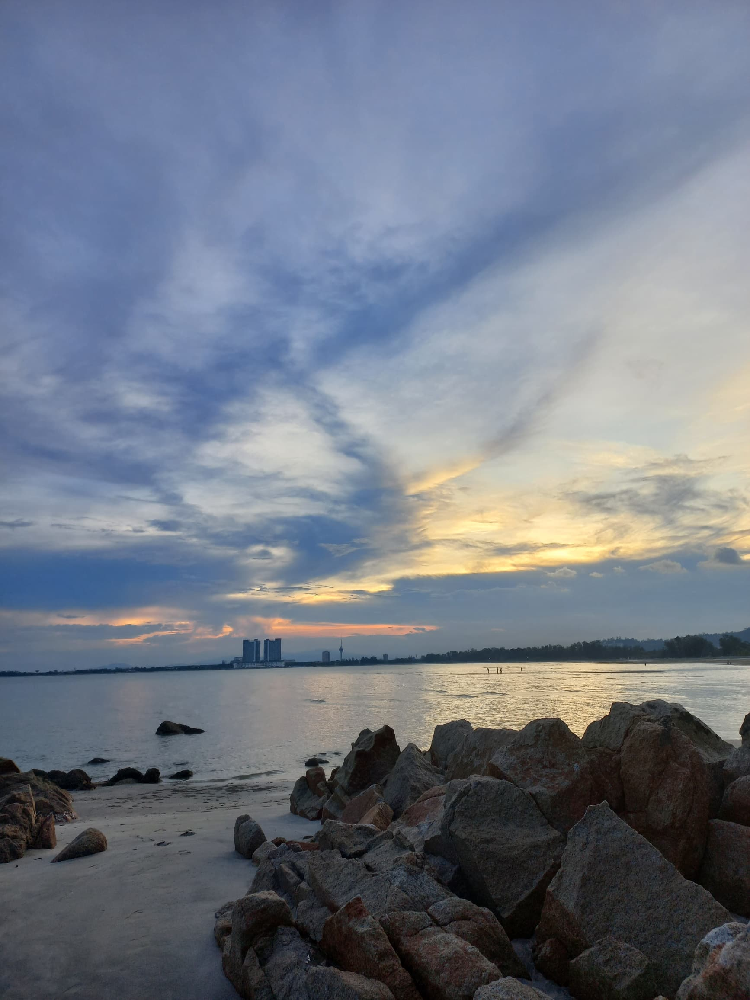

|  | These are my highschool friends or known as my deskmates. We've been close friends since 2018 until now even though currently pursuing degree in other universities. One of us is already married. |
| These are my Diploma friends. We've been friends since first semester and still close until now. Sometimes, we will gather to update our current lives. All of us successfully graduated on time. There are many sweet memories with them especially while doing assignments and FYP together without sleep in library. This is one of my best experience in my Diploma journey. |  |
|  | This is my favourite foods which are pizza and pasta. It is quite pricey but worth it as it is different from regular ones. The cafe is called "notis." from Kuantan. |
| This is my favourite spot in Kuantan. Usually people loves going to Teluk Cempedak. As for me, Pantai Tembeling is my go-to spot whenever I come to Kuantan. This beach is not crowded and there is a sunset even though Pantai Timur is famous with sunrise. The view here is really beautiful as we can see Kuantan city from here. |  |